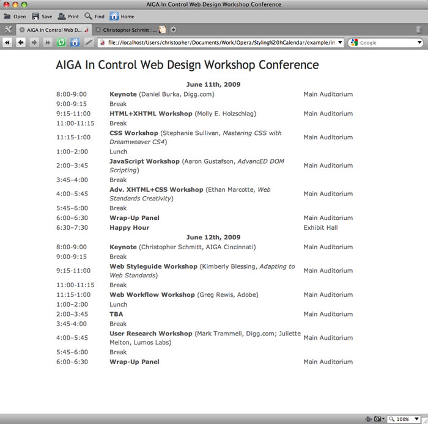
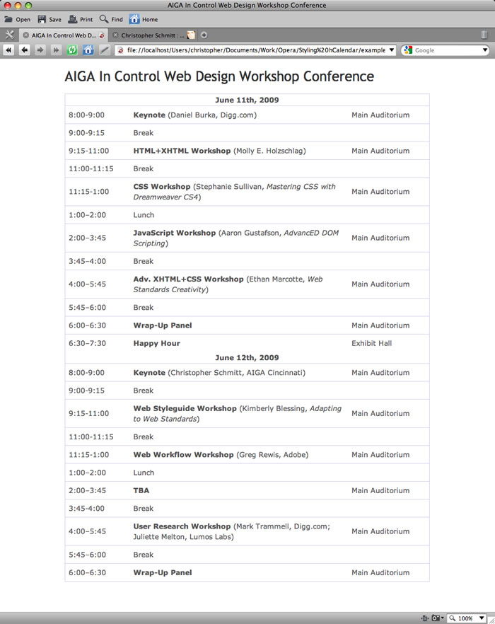
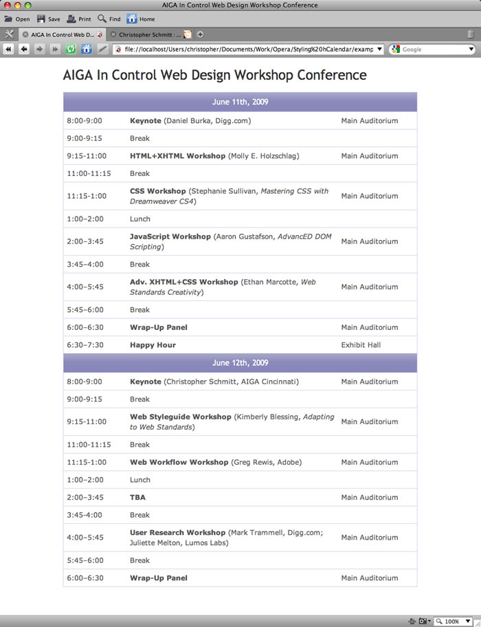
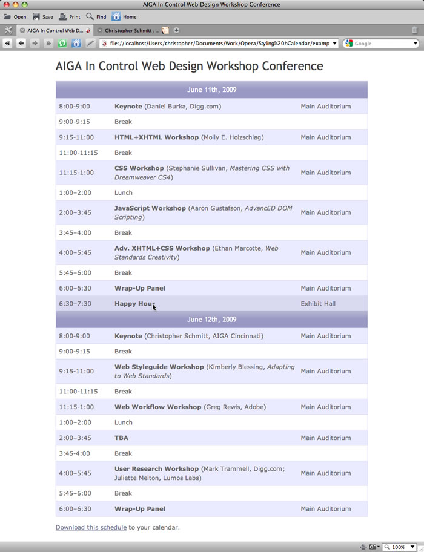

Styling and extracting hCalendar
UPDATE! September 10th 2009: After publishing this article, we were contacted by Microformats instigator Tantek Çelik, who suggested we implement the value-class-pattern to improve on the example's accessibility. The original method used a title attribute on the abbr element to contain the ISO date of the event start and finish times, which is an ok way to do it, but the new way makes more sense semantically, and sits better with screenreaders reading out the data. The new version (article updated throughout) uses span elements to contain the title ISO date, with a class value of value-title to indicate that this is an hCalendar value. Much better all round! We'd like to say thank you to Tantek for the suggestion, and to Jeremy Keith for some further advice.
You can download the new version of the code, or view the new example live, to follow along with this example. If you wish to compare and contrast the new and old methods, you can still download the old source code, or run the old example live.
Introduction
While the Web is filled with all kinds of useful information it’s sometimes cumbersome to make use of it.
From business information trapped inside an image format to email addresses hacked to foil spam bots from harvesting them, web developers often make it harder for our visitors to make use of the information we want to give them, and for us to reuse it in other applications.
One example is event information - the traditional way would be to present it as a paragraph (or list) of text, and hope people mark it in their calendars, perhaps writing it on to a physical calendar or copying and pasting it into their computer's calendar application.
However, we can make things easier by marking up our events with the hCalendar microformat - this allows site visitors can use a third-party application to add our event information to their calendar applications with a single button click - no copy and paste required! In this article I will show you how to markup and style the hCalendar microformat, and how to provide your site visitors with a link to import your event into their calendar application using the Technorati Events Feed Service.
Introducing hCalendar
hCalendar is the microformat that embeds event information into a web page. Based on the iCalendar file format used to exchange event data, it uses standardized (X)HTML to code semantic information - such as the event time and place - into a web document.
The HTML
Let's examine a section of our HTML table:
<tr>
<th colspan="3">June 11th, 2009</th>
</tr>
<tr class="vevent alt">
<td width="104"><span class="dtstart"><span class="value-title" title="2009-06-11T08:00-04:00">8:00</span></span>-<span class="dtend"><span class="value-title" title="2009-06-11T09:00-04:00">9:00</span></span></td>
<td width="382" class="summary"><strong>Keynote</strong> (Daniel Burka, Digg.com)</td>
<td width="133" class="location">Main Auditorium</td>
</tr>
<tr>
<td>9:00-9:15</td>
<td colspan="2">Break</td>
</tr>
<tr class="vevent alt">
<td><span class="dtstart"><span class="value-title" title="2009-06-11T09:15-04:0000">9:15</span></span>-<span class="dtend"><span class="value-title" title="2009-06-11T11:00-04:00">11:00</span></span></td>
<td class="summary"><strong>HTML+XHTML Workshop</strong> (Molly E. Holzschlag)</td>
<td class="location">Main Auditorium</td>
</tr>
[...]
</table>Here we have a series of events, with each event getting its own row. The columns include the time for each academic talk, the name of the talk, and its location. Note the use of hCalendar properties - each separate event (enclosed in a table row tag) is designated by the vevent class. This specifies it as an hCalendar entry.
And, while only the beginning time of the event (dtstart) and summary is required for every hcalendar event, we've also included the end time (dtend) and location properties.
Note: For more optional properties, see the hCalendar cheatsheet. For tools to create your own hCalendar, check out the hCalendar Creator and the Conference Schedule Creator.)
While this code provides the structure for our calendar, the unstyled table is quite plain and difficult to read, as shown in Figure 1:
Figure 1. The default rendering of the HTML table.
Styling hCalendar with CSS
Let's move forward by digging into the CSS for this page; first, we'll add some much-needed padding and borders:
table {
border: 1px solid #d2d1ef;
}
td {
border-top: 1px solid #d2d1ef;
margin: 0;
padding: 7px;
}We've added a light lavender border around the perimeter of the table, as well as between its rows. The padding gives the text within the cells some breathing room, as shown in Figure 2:
Figure 2: Light coloured border around the content in table cells.
Next, we're going to style the table headers: here, the headers are those cells marking out the two dates of the conference:
th {
font: normal 16px "Trebuchet MS", Verdana, Arial, sans-serif;
color: #fff;
padding: 10px 7px 10px 7px;
background-image: url(images/background.jpg);
}After setting the font and its colour, we've added some extra padding to the top and bottom of the cell, just to make it a bit chunkier than the rest of the table rows. Finally, we've added a soft purple gradient JPEG (see Figure 3) as the background image.
Figure 3: The image used for tiling backgrounds.
Now our conference schedule is starting to look more polished, as seen in Figure 4.
Figure 4: The headers are now styled: looking better already!
Next, let's add some zebra striping to make the table a bit more readable. To do this, we need to go back into our HTML and add an extra class to every other table row:
<tr class="vevent alt">Once every other table row is marked out, we can target those rows and colour them separately:
tr.alt {
background-color: #e7e7ff;
}So, we've changed the background-color of every other table row to a light lavender, resulting in the page seen in Figure 5.
Figure 5: The table cells are striped.
Note that you can stripe tables much more easily using the CSS 3 nth-child pseudo-class, which works in most modern browsers. However, this excludes Internet Explorer, so I have stuck with the old way in this article to ensure maximum compatibility. To learn more about nth-child, read my Zebra Striping tables with CSS 3 article.
This conference schedule is looking really great, but there is still more we can do: let's add a bit more interactivity to the page. We'll include some interesting hover effects, so that when the user runs his mouse over a row, the row becomes highlighted. Not only is this effect pretty, but it enhances usability by focusing the users attention on what her mouse is hovering over.
tr:hover {
background-color: #d2d1ef;
}Here, we've just targeted the :hover pseudo-class within the table row, and have coloured the background a darker shade of lavender. Now, when the user runs his mouse over a row, the :hover pseudo-class is activated, and the row changes colour.
Please, won't somebody think of the Microformat?
Now that our table looks good, let's exploit the hCalendar markup in our schedule. As hCalendar is a standardized method of marking up HTML (as all Microformats are), there are several third-party tools available to extract this information from your pages. One such tool is Technorati's Events Feed Service, which allows you to pull in (or subscribe to) the hCalendar events embedded in web pages using your calendar application (such as iCal or Google Calendar). You can use this service by entering a URL to the Events Service bookmarklet on your web page, or you can add its bookmarklet to your bookmarks - see the Events Feed Service page for all the details you'll need to do this.
In this case, we'll take the latter option and add a link to the bookmarklet at the bottom of our page:
<p><a href="javascript:void(location.href='http://feeds.technorati.com/events/'+escape(location.href))">Download this schedule</a> to your calendar.</p>When the user clicks on the link, the Technorati service activates and the user is prompted to download the conference events into their calendar application.
Figure 6 shows the finished page.
Figure 6. Now we have a rollover effect on the table rows, and a link to download the schedule.
Summary
The finished conference schedule is nicely styled, subtly interactive, and provides users with an easy way to import the schedule into their calendars. This article has demonstrated how we can easily incorporate the hCalendar Microformat into our web pages.
This article is licensed under a Creative Commons Attribution, Non Commercial - Share Alike 2.5 license.
Comments
The forum archive of this article is still available on My Opera.
No new comments accepted.